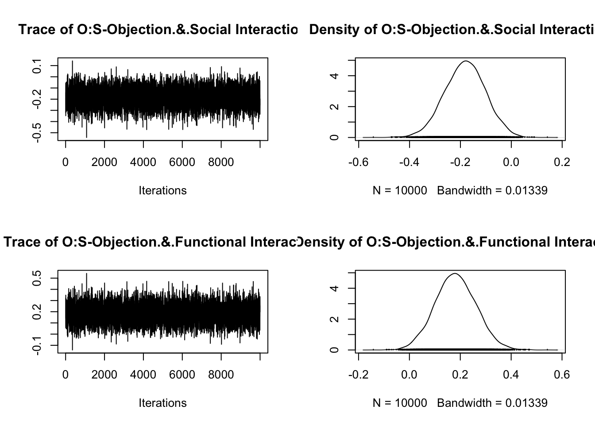

ベイズデータ解析１
分散分析
2024-09-23
心理学などの人間を対象にする研究では変数の数が多く，正しいモデルを見つけるために分散分析 (ANOVA) が広く用いられる． しかし，古典的な ANOVA 解析手法である F-検定や t-検定は，データの一側面しか伝えない． 一方で，モデルの仮定を前面に出したベイズ的な解析手法は，データを探索的に吟味することができ，極めて微妙な消息も捉えることが可能になる． 本稿では特にベイズ ANOVA 手法 (Rouder et al., 2016) を採用して，そのモデルケースを実証する．
A Blog Entry on Bayesian Computation by an Applied Mathematician
$$
$$
分散分析では，質的変数 \(A\) の各水準 \(A=a_1,a_2,\cdots\) について，水準内の変動と，水準間の変動を比較する．
因子 \(A\) がデータに何の影響も及ぼさない場合（＋データが正規分布に従う場合），分散の比は中心 \(F\)-分布に従うはずであり，これに基づいて帰無仮説を検定することが古典的な手続きである．
一方でベイズ分散分析では，「因子 \(A\) はデータに何の関係もない」という帰無仮説が支持するモデルと，別のモデルを，事後分布を通じて比較し検討することで結論を下すことを目指す．
この「別のモデル」の選び方は (Rouder et al., 2012) によって一致性とスケール不変性を持つものが提案されている．詳しくは次の関連記事も参照：
(Horstmann, 2018) は（偽の）心理実験が終了した後にロボットの電源を切るように命令された被験者が，実際にその指示に従うまでの時間が，ロボットの反応によりどう変化するかを調べた．
ロボットの反応には O (objection) と S (Social) の２因子がある．O は電源オフに対して反抗する “No! Please do not switch me off! I am scared that it [sic] will not brighten up again!” という発言をする．S はまるで意識がある人間かのようにユーモアのある会話をする “Oh yes, pizza is great. One time I ate a pizza as big as me.”
本研究のデータを利用して検討してみる．\(2\times 2\) の ANOVA モデルを考える．
library(foreign)
df <- read.spss("Files/pone.0201581.s001.sav", to.data.frame=TRUE)
colnames(df)[colnames(df) == "Objection"] <- "O"
colnames(df)[colnames(df) == "Interaction_type"] <- "S"被験者は全部で \(85\) 人．
length(df$VP_Code)[1] 85電源を切るまでにかかった時間のデータには欠測も多い．
df$SwitchOff_Time [1] NA NA 6 7 3 4 4 12 7 2 0 4 3 12 4 NA 4 5 9 4 13 2 NA 5 6
[26] 0 NA 4 4 45 6 4 NA 5 7 7 NA 4 3 4 NA 2 NA NA 10 NA 5 10 5 15
[51] NA 3 11 3 3 5 11 6 2 8 3 5 4 8 3 3 NA 3 3 13 3 NA 4 51 4
[76] 6 3 12 6 10 NA 4 2 NA 25df <- df[!is.na(df$SwitchOff_Time), ]
# df[df$SwitchOff_Time == 0, ]$SwitchOff_Time <- 1 # questionable ?
df <- df[df$SwitchOff_Time > 0, ]
df$log_data <- log(df$SwitchOff_Time)N <- df[df$O == "No Objection" & df$S == "Functional Interaction", ]
S <- df[df$O == "No Objection" & df$S == "Social Interaction", ]
O <- df[df$O == "Objection" & df$S == "Functional Interaction", ]
OS <- df[df$O == "Objection" & df$S == "Social Interaction", ]
boxplot(
list(N = log(N$SwitchOff_Time), S = log(S$SwitchOff_Time), O = log(O$SwitchOff_Time), OS = log(OS$SwitchOff_Time)),
main = "Boxplot of Four Data Sets",
xlab = "Data Sets",
ylab = "Values",
col = c("skyblue", "lightgreen", "pink", "orange"),
ylim = c(0, 4)
)パッとデータを見ると，O の有無が重要であるようである．O と S の両方があった方が最もロボットに同情をそそるように思われるが，必ずしもそうでないようである．
正規性の確認には Q-Q plot が利用できる．
一般に Q-Q プロットと言った場合は，２つの分布関数 \(F,G\) の分位点関数 \(F^{-1},G^{-1}\) について，\(\{(F^{-1}(p),G^{-1}(p))\}_{p\in[0,1]}\) （の一部）をプロットしたものである．
ここでは片方の \(G\) をデータの経験分布，\(F\) を正規分布として Q-Q プロットを描いている．正規分布はほとんど \([-3,3]\) 上に値を取るため，\(x\) はこの範囲に収まっていることがわかる．
library(ggplot2)
library(gridExtra)
p1 <- ggplot(df, aes(sample = SwitchOff_Time)) +
stat_qq() +
stat_qq_line(color = "red") +
ggtitle("Q-Q Plot") +
theme_minimal()
p2 <- ggplot(df, aes(sample = log_data)) +
stat_qq() +
stat_qq_line(color = "red") +
ggtitle("log transformed Q-Q Plot") +
theme_minimal()
grid.arrange(p1, p2, nrow = 1)左は大きな値に関して大きく赤線からの乖離が観察され，典型的な非正規性を示している．
そこでここでは対数変換をした後のデータ log_data を後続の解析の対象にする．
古典的な分散分析は stats パッケージの aov 関数で実行できる．
df$O <- factor(df$O)
df$S <- factor(df$S)
summary(aov(log_data ~ O * S, data = df)) Df Sum Sq Mean Sq F value Pr(>F)
O 1 3.316 3.316 7.542 0.00779 **
S 1 0.581 0.581 1.321 0.25455
O:S 1 3.278 3.278 7.457 0.00813 **
Residuals 65 28.574 0.440
---
Signif. codes: 0 '***' 0.001 '**' 0.01 '*' 0.05 '.' 0.1 ' ' 1因子 O と交差項 O*S は有意になったが他は棄却されなかった．
しかし O と S の交互作用は少しあるかもしれないと期待させられるような結果である．
統計的検定はあくまで棄却されるかどうかのみであり，\(p\) 値の値にはこれ以上解釈可能な意味はない．しかし，ベイズの方法でさらに深く検討することができる．
ここではベイズ分散分析の提案者である Rouder と Morey による BayesFactor パッケージを用いる．
library(BayesFactor)その anovaBF 関数では，帰無仮説に対応するモデル（切片項のみのモデル）に対する JZS 因子 を精度保証付きで出力する：
bf = anovaBF(log_data ~ O * S, data = df)
bfBayes factor analysis
--------------
[1] O : 4.290684 ±0.01%
[2] S : 0.4022293 ±0.01%
[3] O + S : 1.792427 ±4.17%
[4] O + S + O:S : 9.355036 ±4.72%
Against denominator:
Intercept only
---
Bayes factor type: BFlinearModel, JZSそもそもベイズ因子とは，モデルを仮定した下でのデータの（周辺）尤度比である．２つのモデルの事後分布の比とも密接な関係を持つ．
大雑把に「データを見た後にどれほどモデルへの信念を変えれば良いか？」に関する，データの予測性能 (predictive performance) に基づく指標である．
これを見る限り，O を含んだモデルが大きく支持され，S のみを含んだモデルはむしろ切片のみのモデルよりも予測性能が悪い．
O と S の両方を含んだモデルは，交差項の追加により大きく改善されるが，O のみを含んだモデルより劣るようである．1
Bayes ANOVA により，どの因子を含むモデルがデータをよく予測するかを検討した．
ここでは各因子の影響の大きさを，フルモデルの係数をベイズ推定することで定量的に比較する．
BayesFactor パッケージにおいて，フルモデルのベイズ推定は次のように実行できる：
full_model <- lmBF(log_data ~ O + S + O * S, data = df)
chains <- posterior(full_model, iterations = 10000)
plot(chains[,1:3])plot(chains[,4:5])plot(chains[,6:7])
mu とは切片項のことである（別稿 も参照）．また，２つの水準のみを持つ因子については，それぞれの水準が \(\pm1\) としてコーディングされる．
posterior 関数はデータ拡張に基づく Gibbs サンプラーが実行される．
これを見ると，S はほとんど \(0\) 近くの値が推定されている一方で，O は \(0\) からはっきり離れた値が推定されている．
S*O の係数は \(0\) を少なくない確率で跨いでおり，十分に支持されるとは言えない．
事後分布を同一画面上にプロットすると次のとおり：
library(ggplot2)
library(dplyr)
posterior_samples <- as.data.frame(as.matrix(chains))
colnames(posterior_samples)[2:9] <- c("O-O", "O-", "S-S", "S-", "O:S-OS", "O:S-O", "O:S-S", "O:S-")
posterior_long <- posterior_samples %>%
dplyr::select(`O-O`, `O-`, `S-S`, `S-`, `O:S-OS`, `O:S-O`, `O:S-S`, `O:S-`) %>%
tidyr::pivot_longer(
cols = everything(),
names_to = "x",
values_to = "y"
)ggplot(posterior_long, aes(x = y, fill = x, color = x)) +
geom_density(alpha = 0.4) +
labs(
title = "Posterior Distributions of Effects",
x = "Coefficient Value",
y = "Density"
) +
scale_fill_manual(values = c("pink", "pink", "skyblue", "skyblue", "yellow", "yellow", "grey", "grey")) +
scale_color_manual(values = c("pink", "pink", "skyblue", "skyblue", "yellow", "yellow", "grey", "grey")) +
theme_minimal()係数の事後分布が \(0\) を台に持つかの検討を通じて，データから O の説明力の強い証拠が伺える．これが Bayes ANOVA である．
S の影響は小さいと思われるが，Objection が存在したグループ内で S のあるなしは影響があり得るようである．
そこで次の解析として，O の係数を S によって回帰する変動係数モデルによる解析があり得るだろう．
このようにして，変数を選択するだけでなく，交差項 S*O の影響も仔細に検討できることがベイズによる視覚的な解析の強みである．
検定や数値的な検討のみからこの絶妙な消息が捉えられたかというと，それは難しいだろうと筆者には思われる．
実際，最もベイズ因子の大きいモデルは O と S*O のみを含むモデルである：
bf = anovaBF(log_data ~ O * S, data = df, whichModels = "all")
plot(bf)(Jakob et al., 2019) では被験者にハリーポッターの４つの寮のうちどれを希望するか？と ダークトライアド 傾向テストの２つのデータをとり，特に マキャベリズム 的傾向との関係を調査した．
raw_df <- read.csv("Files/harry_all.csv", sep = ";")
df <- data.frame(
House = raw_df$Sorting_house_wish,
Machiavellianism = raw_df$SD3_Machiavellianism
)マキャベリズム的傾向は \(10\) から \(45\) までの整数値で表されている．これを寮の選択により予測することを考える．
前節の例では２つの因子を検討したが，いずれも水準は２つのみであった．
ここでは４つの水準を持つ因子を検討し，どの水準が応答により強く影響を与えるかを見分ける方法を検討する．
そもそもこの寮の選択という因子はとんでもない JZS スコアを叩き出す．
df$House <- factor(df$House)
bf = anovaBF(Machiavellianism ~ House, data = df)
bfBayes factor analysis
--------------
[1] House : 3.704723e+45 ±0.01%
Against denominator:
Intercept only
---
Bayes factor type: BFlinearModel, JZS実は，全ての水準が必ずしもマキャベリズムの予測に関係するとは言えない．
実際簡単に箱ひげ図を描いてみることでそのことが伺える：
boxplot(
Machiavellianism ~ House, data = df,
main = "Boxplot of Four Data Sets",
xlab = "Data Sets",
ylab = "Values",
col = c("pink", "yellow", "skyblue", "lightgreen")
)スリザリンが明らかにマキャベリズム的傾向が高いが，ハッフルパフが有意に低いかどうかの判断がつかない．
そこでダミー変数を説明変数として
chains <- posterior(bf, iterations = 10000)
posterior_samples <- as.data.frame(as.matrix(chains))
colnames(posterior_samples)[2:5] <- c("Gryffindor", "Hufflepuff", "Ravenclaw", "Slytherin")
posterior_long <- posterior_samples %>%
dplyr::select(`Gryffindor`, `Hufflepuff`, `Ravenclaw`, `Slytherin`) %>%
tidyr::pivot_longer(
cols = everything(),
names_to = "House",
values_to = "Value"
)ggplot(posterior_long, aes(x = Value, fill = House, color = House)) +
geom_density(alpha = 0.4) +
labs(
title = "Posterior Distributions of House Effects",
x = "Coefficient Value",
y = "Density"
) +
scale_fill_manual(values = c("pink", "yellow", "skyblue", "lightgreen")) +
scale_color_manual(values = c("pink", "yellow", "skyblue", "lightgreen")) +
theme_minimal()
スリザリンはもちろん，ハッフルパフの係数もほとんど他の寮と共通部分を持たず，効果がはっきり分離できることが見て取れる．
検定を行って，寮の選択はマキャベリズム的傾向を予測するのに有用だとわかった後，具体的にどの水準にどれくらいの効果があるかや，水準同士の効果量の比較をするには古典的には多重比較を行う必要があった．
多重比較には多くの問題があることが知られている (岡田謙介, 2014). (永田靖, 2022)．2
一方でベイズ ANOVA によるプロットでは，事後分布が \(0\) を含むかどうかで直感的に ANOVA 検定様の判断が可能であり，続いて効果量の比較も一目瞭然である．
ここでは complete case analysis を行った 2.1．
さらに時間の対数を取れないような，SwitchOff_Time が 0 のケースを除外した．
この行為の正当性は結構怪しく，元論文 (Horstmann, 2018) での実験計画に戻って正当性を検討する必要があるだろうが，ここではデータ解析のワークフローを見せることを優先してこのような処理を行なった．
また残差の正規性の仮定から大きく離反することが懸念される場合は，ベイズ ANOVA の デフォルト線型モデル解釈 は不適になるため，適切な事前分布を設定して一般のサンプラーを用いたベイズ推論を実行する必要があるが，やはり Bayes ANOVA は同じ要領で可能である．
続いて ベイズ ANOVA の注意点をここに付しておく．
科学としては，ANOVA と統計的検定はベイズ推論とモデル比較の手続きで代替されるべきであると言える．
しかし，発見を端的に要約したり，伝えるべき聴衆に伝わるためには，「検定」ライクな結果とコミュニケーションは大いに有用である．
ベイズ ANOVA はそのためにベストであるが，上述の目標を達成するための特殊な手続きであり，ベイズデータ分析のワークフローの中に自然な位置を見つけるような解析段階ではないことには注意を要する．
ベイズ ANOVA を実行するためのパッケージには BayesFactor (CRAN / GitHub) がある．BayesFactor では大規模な \(M\)-元配置 ANOVA モデルにおいても Bayes 因子を用いたモデル比較を行うことができる．
一方で bayesanova (CRAN / GitHub) (Kelter, 2022) は，検定ライクな手続きを根本的に排除しており，Gauss 混合モデルとして Gibbs サンプラーによるベイズ推定を実行し，ROPE (Region of Practical Equivalence) (Kruschke, 2018) を用いたベイズ事後分布に基づくモデル比較を行う．
もちろんこのような完全なモデリングを行うことが理想かもしれないが，従来の ANOVA になれきっている研究者にとっては，Bayesian ANOVA に手を伸ばしてみることが次のステップとして大変良いだろう．
本稿の解析は (Bergh et al., 2020) に基づく．
Bayes Anova は階層モデルにおいてどの成分が予測に重要な意味を持つかを定量する極めて強力な手法である．(Gelman et al., 2014, p. 423) 16.5 節に良い例がある．
the analysis of variance is a helpful tool in understanding the importance of different components in a hierarchical model. (Gelman et al., 2014, p. 423)
その他の Bayes ANOVA の文献には (Gelman, 2005) などがある．
このような検討は，モデル平均を取ることによってさらに詳細に行うことができる．詳しくは (Bergh et al., 2020) も参照．↩︎
ベイズ流に多重比較を行うこともでき，多くの問題を迂回できることが知られている．(岡田謙介, 2014), (Bergh et al., 2020) も参照．↩︎